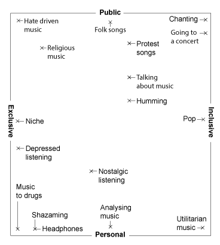

Getting into it
Intro
During the past two weeks, we have worked on framing the direction of this project, made some ideas that we want to test, written, mapped, and interviewed two musicians that are working with niche music.
We don’t know who we are designing for yet, and we hope to come closed by experimenting in order to define a defined direction in this project. We’re naming the preliminary ideas “Design Statements”, as they are looking at listening to music from different perspectives.
(With magic happens, the listener is crossing the digital music in their ears with their tactile environment. By touching objects, the sound is influenced. Different obejects make up for different sounds. The difference between listening to music and making music becomes smaller, and the listener is free to utilise the tactility to the degree that satisfies them. Everyone touches their own way)
(All you is an exaggeration of how music platforms tries to taylor and suggest music to your personal taste. If we could feed in our entire life story, our values, wishes and beliefs, suggesting algorithm can tell us exactly what music it thinks will be a fundament for our feelings. If we feel anxious, we get certain types of songs to aid it, etc.)
(UR music video lets the listener star in a music video, as the music plays. By placing cameras everywhere you go, you will be able to see yourself from a third person perspective, giving you an out of body experience. The concept is meant to allow the listener to completely live themselves into the music, and it is and experiment of how music can affect our actions and our look on our own life as a narrative of events.)
(Music memento tries to capture the "now" of entire groups. A list of songs is created based on the musical taste and wishes of the public. The playlist is then opened for listening for a limited amount of time. Once the time is up, the songs are removed for 15 years, and rereleased to the public after the years have passed. The concept is aiming at defining a certain moment in history to be remembered by more than one person, a collective nostalgia, and an attemt at archiving the feeling of history instead of the events.)
(Yousic goes deeper into the metadata of suggestion algorithms to what music or sounds that we want to listen to. When it comes with a suggestion, it HAS to justify it. It has to tell us exacly how it figured out that this would be a good suggestion. The user can respond to what they think about it, whether it was a narrow suggestion, if they were offended, happy or puzzled. The ongoing discussion ultimatl gives the listener more oversight and info into how the computer sees them and their preferences for music, which makes understanding your own traces less intimidating.)
We’ve created some maps in order to differentiate between the design statements. A difficult part of mapping listening experiences is that we are still differing between listening and creating music, even though creating IS listening. We expect that we will be able to discern or combine these two ways of hearing as we progress.
(model 1)
Immersiveness (model 2)
The first contrast difference between Music and Muzak. Listening to music, is focusing on the music and not your surroundings. Muzak, is music that exaggerates your environment. So, total Muzak is a total immersion into your surroundings (Model 1)
The second contrast is the level of immersion. How immersed are you into music, and how immersed are you into Muzak?
(model 2)
Music and intentionality (model 3)
The second contrast here looks at chaos and intentionality. To specify, John Cage stated that any sound can be regarded as music However, we think that this has to follow the INTENTION that any sound can be regarded as music.
(model 3)
Musical tayloring (model 4)
Taking Cage’s statement into regard, any sound can become music, and when music is purposefully made FOR something. Tayloring music to a specific purpose, can consume any type of listening into specific purposes. Types of sounds are no longer relevant, and are replaced by whatever the sound is used for.
(model 4)
The social dimension of music (model 5)
With this map we try to take the listening experiences into exclusive account, and look at their potential for including/excluding others, and whether the experience is personal or collective.
(model 5)
Chorus (small reflection)
Tailored to the extreme
Is it fair to say that the biggest indication of contemporary creative practice, is that of adjusting to the wants of the receiver? To what degree does the receiver expect music to challenge their personal taste?
In the beginning, you had pop music. Driven by a handful of gigantic publishers, where everyone was expecting nuances of the same sound.
A widening of nuances. A more discerning ear. An explosion in global accessibility. Then, an accumulation into heterogeneous genres, appealing to rebellion, driving values forward (Being driven by that which drives the values, etc., etc.).
Genres being recognised as what it was, distinctions were fine tuned to fit even better on those who wanted to carry them. Shops of distinctions were opened, picking one up and wearing it became less and less of a thrill.
As soon as our past managed to catch up with the present, genres were still looking to be defined, played with and received, well 15 years into the mainstreamization of the internet. However. Genres were just one way of play, combined with every single piece of music ever recorded, their past legacy and their present relevance.
Genres will no longer be what we validate music after, it is no longer what precedes musical breakthroughs. Neither is musical instruments. When every sound is archived in the same format, on the same platforms. It is through the mediums of music that the values are found. We listen to moods, every self curated playlist is a valid musical genre; The songs you Shazamed, black metal homework music, Piano, Depression. The ways that sounds come to us, are the sounds of music.
This also applies to sounds we don’t necessarily categorize as music. As all known genres are readily available, the boundaries for acceptable listening material is widened. The content of recorded sound and how it is used and enjoyed, evolves parallel to new technology, trends and mediums provided for the creation and distribution of sound.
This train of thought could be applied to the whole history of recorded music i.e. how physical formats restricted the lengths of pieces, how consumer-based recording gear created sub-cultures, the rise of ASMR and podcasts, etc.
Hook (A problem statement draft)
What:
Listening to music is listening in a particular medium. Therefore, we are listening to the medium, and not the music. The musician exemplifies the medium, the medium frames the music. We want to understand the frames of the mediums used today, and we want to improve and expand these frames, to create coexisting listening experiences for people with different needs, which will open up for new ways of creating music. The needs of the listener is the goal of the medium.
Why:
The problem is not the mediums in itself. The problem is the excessive use of a few number of mediums, that can’t and won’t utilise the potential that lies in experiencing music. The forgotten ways of listening, and the ways of listening that aren’t being recognised needs to be lifted up and experienced. Only in that way, can music reach a foreseeable potential; amplifying our emotions, challenging societal conventions, defining identities, and raising conversations and questions. We aim to shed light on new ways of listening, in order to open up for new areas where design, music making and listening can float freely.
How:
We will design mediums for listening to music. The mediums will be designed from the potential that music can have. In order to understand the potential of music, we will speak to those who consider music to be an important part of their lives, and understand why. We will also try to understand what the mediums that we consume music through are built for, and design models that build on different intentions.
Outro
We see that it is necessary to frame the project further, to be able to play more with ideas. We hope to use the ideas we’ve come up with this week to help us with defining a user group, and to narrow down our problem statement.
Next week, we will make the first draft of our report. In our schedule, we’ve set up Friday for our first deadline, where we will report on our progress so far. On that account, we will look for a sensor together with our supervisor that is suitable to give final feedback on our final day.
Lastly, we still want to get more direct insight from consumers, industry people and experts, and we will be setting up more interviews in the coming week.
.
.
.